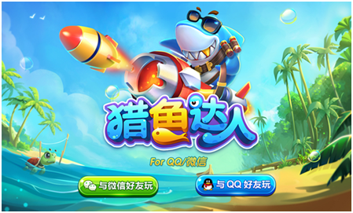

2016年，腾讯发布了首款捕鱼游戏——《捕鱼来了》，标志着腾讯正式进入了捕鱼游戏细分领域。而2017年腾讯的第二款捕鱼游戏——《猎鱼达人》也已经启动不删档测试，即将正式发布。腾讯持续布局捕鱼游戏市场的举动意味着什么呢？在纹桃看来，无非三个：
1、捕鱼游戏市场持续火爆，腾讯掌握优质渠道资源急于分一杯羹
2、贯彻差异化竞争思路，细分移动游戏市场
3、内部竞争，打造现象级捕鱼游戏产品
《猎鱼达人》在腾讯系扮演的角色
据纹桃了解，《捕鱼达人》由腾讯与力港网络合作研发，《猎鱼达人》则是与波克城市合作研发的。而有趣的是，在2016年，力港网络和波克城市尚为了“捕鱼达人”的商标归属而大打官司。不过腾讯好像没有考虑那么多，作为运营方，腾讯看中更多的可能恰好是这两家公司不一样的游戏产品基因。
正如腾讯左手QQ右手微信，此次先后上线的《捕鱼来了》和《猎鱼达人》，从某种程度上说，可以最大程度地占据捕鱼市场份额。毕竟同一品类下，用户差异化的需求，需要更多产品来满足。虽说《捕鱼来了》和《猎鱼达人》均为捕鱼游戏，但两家研发公司不同的风格，以及两款产品的特性跟内容玩法，还是有比较明显的差异。

猎鱼达人
在测试版本中，纹桃认为《猎鱼达人》继承了波克城市《捕鱼达人千炮版》的强联网基因，其亮点主要在于社交和竞技体验。 “抓抓乐”，“水族馆”等看似休闲的玩法，实际上让《猎鱼达人》具备了强社交的属性，结合腾讯的用户属性和社交优势，对于未来的捕鱼市场，或许又会是一次大的革新。
波克系捕鱼游戏的社交基因
笔者依稀记得，《捕鱼达人》流行的时间是在2010年前后，那会智能手机尚未普及，捕鱼游戏玩法简单又不失趣味性，吸引了不少玩家。是不是能玩《捕鱼达人》，甚至成为了大家判断一款智能机是否合格的标准。
而随着移动互联网的不断完善、智能手机的普及，休闲网络游戏开始流行。波克城市的《捕鱼达人千炮版》恰逢其时，以强联网多人捕鱼的形式进入市场。从各渠道的月报数据可以看出，在捕鱼游戏品类中，波克城市的《捕鱼达人千炮版》数据表现一直都很靠前。更在2016年11月登顶腾讯应用宝单机游戏日均收入榜。
据纹桃了解，波克城市早在09年就已经有了PC端的多人联网捕鱼《捕鱼达人之航海大冒险》，在数据的调优和用户的沉淀上，波克城市都拥有稳健的基础，或许这也是波克城市的《猎鱼达人》获得腾讯青睐的原因之一。
而且，这已经不是波克城市跟腾讯的第一次合作。早在2015年，波克城市就已经跟腾讯合作了PC端《猎鱼达人3D》，也是QQ游戏大厅一直在强势推广的捕鱼游戏。此次移动端再度联手，想必也是基于PC端良好合作的进一步深化。
猎鱼达人特色玩法
捕鱼游戏市场的“终结者”
纵观此前腾讯在MOBA、FPS、MMOPRG等中重度细分手游市场，多款并进的布局模式，此次在捕鱼品类的布局上一次引入双产品，符合腾讯一贯的作风。
对于这两款游戏的未来走向如何，一切都还是未知数，但是依托腾讯庞大的用户群以及资源优势，相信必将在“捕鱼”品类掀起一股狂潮。对于当前竞争逐渐白热化的捕鱼市场来说，腾讯的入局或许有望终结长期混乱的捕鱼市场，在不久的未来，或许市场就将迎来一次大洗牌。纹桃科技致力于棋牌游戏开发13年，拥有大量开发运营经验和大批成功案例。
想打造一款迅速盈利的手机捕鱼游戏，欢迎咨询QQ/电话热线：18711739336
了解更多棋牌游戏行业信息：在线咨询>>


游戏产品
PRODUCTS

售后服务
SERVICE

技术支持
TECHNOLOGY

运营指导
OPERATING